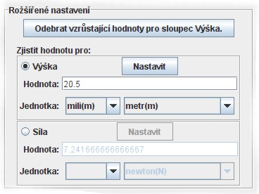

Tato část hlavní obrazovky umožňuje definovat hledané hodnoty a odebírat automaticky neplatné hodnoty.

Po skončení měření lze odebrat naměřené hodnoty, u nichž se detekuje nárůst 1. hodnoty. Lépe řečeno se automaticky odeberou všechny hodnoty naměřené po hodnotě, u které byl detekován nárůst 1. hodnoty a tato hodnota samotná.
Zde lze zjistit jaká hodnota na jedné ose grafu odpovídá hodnotě na druhé ose v závislosti na naměřených hodnotách, i když hledaná hodnota nebyla přímo změřena měřidlem. Tyto hodnoty jsou pak vyneseny v grafu červenou čárou a také jsou zahrnuty do protokolu o měření.
Pro nalezení hodnoty stačí vybrat název sloupce, pro který hodnotu známe a tu
zadat do textového pole. Musí se také nastavit správně jednotka, ve které je
hodnota uvedena. Po stisknutí tlačítka Nastavit se najde hledaná
hodnota pro druhou osu. Hodnoty budou automaticky vyneseny do grafu.